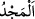
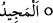
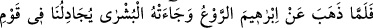
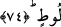

benzemektedir: “Denildi ki: “Ey Nûh bizden bir esenlik ve bereketlerle in.” (Hûd,
11/48) Bu âyet, yukarıda geçmişti.
“Şüphesiz ki O,” yani Allah Teâlâ, “övülmeye lâyıktır,” kulları tarafından övülmeyi
gerektirecek şeyleri, özellikle de Sâre hakkında olanları yapmaktadır, “iyiliği boldur.”
Başta Sâre’nin evini, bereketlerin indiği bir yer kılması olmak üzere kullarına ihsânı ve
hayrı çoktur.
et-Te’vîlâtü’n-Necmiyye’de şöyle denilir: “Cereyan etmekte olan sünnet ve
kudretinden dolayı “övülmeye lâyıktır,” Hem avâmma hem de havâssa nimetler
verirken “iyiliği boldur.” el-Mecd’in Arapça’daki asıl mânâsı bolluktur.”
Şeyhzâde şöyle der: “
, cömertlik demektir.
ise bunun mübâlağa
sıygasıdır.”
İmam Gazâlî (r.h.) da şöyle der: “Mecîd, zâtı şerefli, fiilleri güzel, ihsân ve atâsı bol
demektir. Zâtı şerefli biri, bir de güzel davranışlara sâhip oldu mu ona ‘mecîd’ adı
verilir.”
74. İbrahim’den korku gidip kendisine müjde gelince, Lût kavmi hakkında
bizimle tartışmaya başladı.
“İbrahim’den korku gidip” yani elçilerin buzağıyı yememesinden dolayı kapıldığı
endişe ve korku yok olup onların gerçekten melek olduklarını ve niçin geldiklerini
anladığı için kalbi rahatlayıp “kendisine müjde gelince, Lût kavmi hakkında” onların
durumları ile ilgili olarak azâbın kaldırılması için “bizimle” yani elçilerimizle
“tartışmaya” münâkaşa ve mücâdele etmeye “başladı.”
“Bizimle” ifadesi “elçilerimizle” diye tefsir edilmiştir. Çünkü Ankebût suresinde bu
tartışmanın elçilerle yapıldığı açıkça belirtilmiştir.
Hz. İbrahim’e gelen müjde “Dediler ki: Korkma, biz Lût kavmine gönderildik.”
(Hûd, 11/70) âyetine göre kavminin kurtulması hakkında idi. Ya da “Biz de ona İshak’ı
müjdeledik.” (Hûd, 11/71) âyetine göre ise oğlu İshak’ın olacağı ile ilgiliydi. Son
ifadede her ne kadar müjde Sâre’ye veriliyorsa da müjdede aslolan İbrâhim’dir.
Nitekim bir başka surede de “Ona uslu bir çocuk müjdeledik.” (es-Saffat, 37/101)
buyrulmaktadır.
İbrahim’in elçilerle yaptığı tartışma, güçlü birinin zayıf biriyle tartışması kabilinden
değildir. Zayıf birinin güçlü biriyle, hattâ muhtaç ve fakir birinin zengin ve cömert
biriyle yaptığı tartışma türündendir. Bu tartışma, helâk olacak zayıf ve miskinlerin
kurtulmasını istemek ve onlara acıyıp şefkat göstermekten kaynaklanan bir tartışmadır.